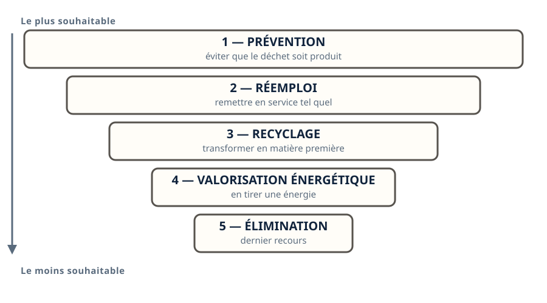
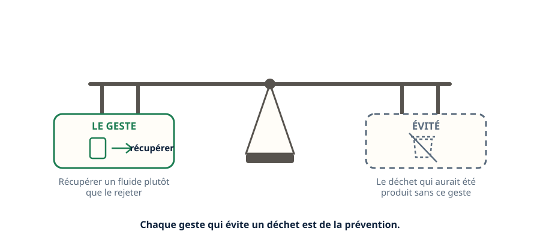
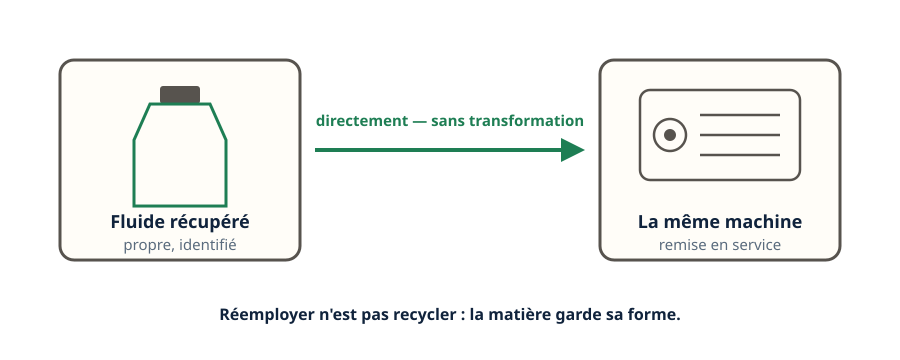
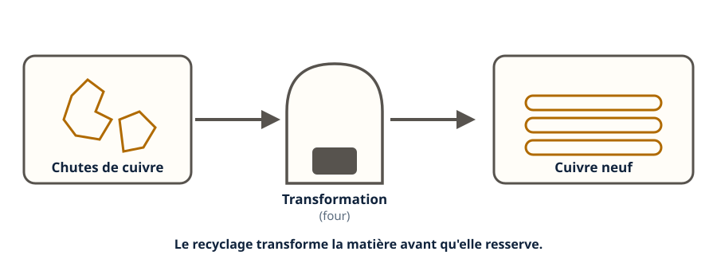
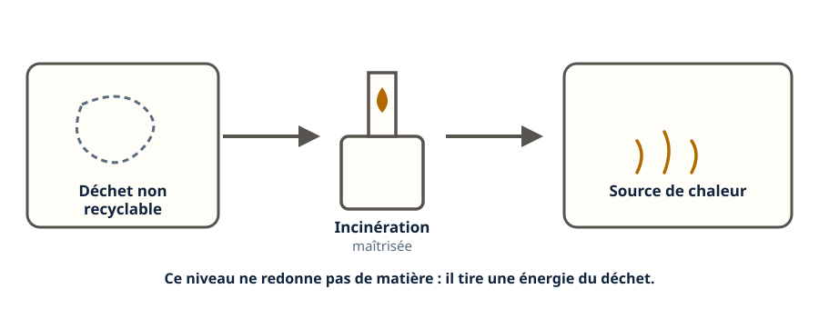
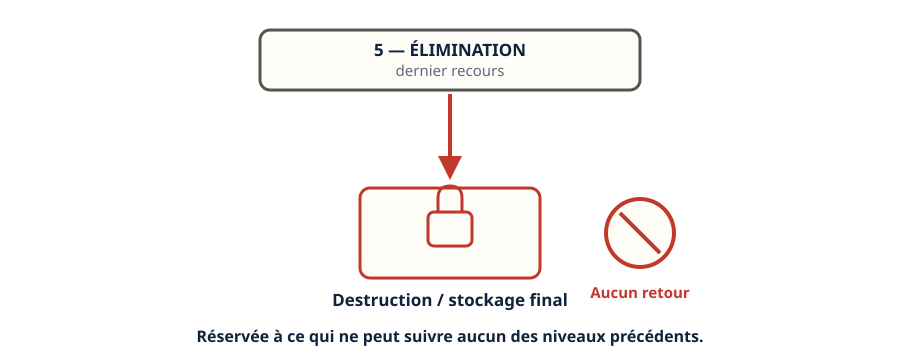
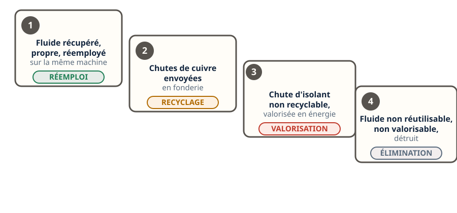
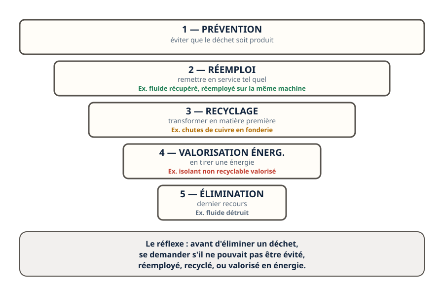

Mini-station commentée · 8 écrans et 4 questions · environ 10 minutes
Objectif
À la fin de la station, vous connaissez l'ordre de préférence des modes de traitement d'un déchet — prévention, réemploi, recyclage, valorisation énergétique, élimination — et vous savez situer les déchets que vous produisez dans cet ordre.
Chaque écran peut être expliqué à voix haute : le bouton « Écouter » commente ce que vous voyez. Rien n'est dit qui ne soit aussi écrit.
1 / 12
Écran 1 sur 8
Un ordre, pas une liste
Les modes de traitement d'un déchet ne sont pas équivalents : ils sont classés dans un ordre de préférence. Le meilleur traitement est celui qui évite le déchet ; le pire est celui qui se contente de l'éliminer.
Cinq niveaux, du plus souhaitable au moins souhaitable : prévention → réemploi → recyclage → valorisation énergétique → élimination.

La largeur de chaque marche traduit l'ordre de préférence, du haut vers le bas.
Écran 2 sur 8
Prévention : ne pas produire le déchet
Le premier niveau ne traite pas le déchet : il l'évite. Récupérer un fluide plutôt que le laisser s'échapper, choisir un matériel qui dure, éviter le suremballage : chaque geste qui empêche un déchet de naître est de la prévention.

Chaque geste qui évite un déchet est de la prévention.
Écran 3 sur 8
Réemploi : remettre en service tel quel
Le deuxième niveau remet un objet ou une matière en service sans la transformer. Un fluide récupéré, propre et identifié, réemployé sur la même machine, en est l'exemple direct. Réemployer n'est pas recycler : la matière garde sa forme.

Réemployer n'est pas recycler : la matière garde sa forme.
Écran 4 sur 8
Recyclage : transformer pour redonner une matière première
Le troisième niveau transforme un déchet pour en refaire une matière première. Le cuivre de tuyauterie fondu pour redevenir du cuivre neuf, un fluide régénéré ou recyclé en usine : la matière change d'état avant de resservir.

La matière est transformée avant de resservir.
Écran 5 sur 8
Valorisation énergétique : le déchet devient une source de chaleur
Le quatrième niveau ne redonne pas de matière : il tire une énergie du déchet, le plus souvent par combustion contrôlée. C'est le cas de certains déchets qui ne peuvent être ni évités, ni réemployés, ni recyclés — certains isolants, par exemple.

Ici, pas de matière neuve : une énergie tirée du déchet.
Écran 6 sur 8
Élimination : le dernier recours
Le cinquième niveau ne récupère ni matière ni énergie : il détruit ou stocke le déchet, sans autre usage. C'est le dernier recours, réservé à ce qui ne peut suivre aucun des niveaux précédents — par exemple, un fluide frigorigène non réutilisable et non valorisable, détruit dans une installation dédiée.

Aucune flèche de retour : c'est bien le dernier recours.
Écran 7 sur 8
Le raisonnement : quatre déchets d'un frigoriste, quatre niveaux
Un fluide récupéré, propre, réemployé sur la même machine → réemploi.
Des chutes de cuivre envoyées en fonderie → recyclage.
Une chute d'isolant non recyclable, valorisée en énergie → valorisation énergétique.
Un fluide non réutilisable, non valorisable, détruit → élimination.

Un même métier fournit un exemple concret à chaque niveau.
Écran 8 sur 8
Bilan et le réflexe
Les modes de traitement sont classés dans un ordre de préférence, pas équivalents.
Prévention : éviter le déchet. Réemploi : remettre en service tel quel. Recyclage : transformer en matière première. Valorisation énergétique : en tirer une énergie. Élimination : dernier recours.
Un même métier — le froid — fournit un exemple concret à chaque niveau.
L'élimination n'est jamais le premier choix : c'est ce qui reste quand rien d'autre n'est possible.
Le réflexe : avant d'éliminer un déchet, se demander s'il ne pouvait pas être évité, réemployé, recyclé, ou valorisé en énergie.

Cinq niveaux, un même métier, un exemple à chaque marche.
Question 1 sur 4
Quel est le mode de traitement le plus souhaitable pour un déchet ?
Rappel de l'écran 1 — l'ordre des cinq niveaux.
Question 2 sur 4
Un fluide récupéré, propre, réemployé sur la machine dont il vient : quel niveau ?
Rappel de l'écran 3 — le réemploi, sans transformation.
Question 3 sur 4
Des chutes de cuivre fondues pour redevenir du cuivre neuf : quel niveau ?
Rappel de l'écran 4 — le recyclage transforme la matière.
Question 4 sur 4
Quand l'élimination est-elle le bon choix ?
Rappel de l'écran 6 — le dernier recours, sans retour.
Les correspondances de la station
Traçabilité (sous-ligne Fluidique & thermique, en préparation) — le registre qui suit chaque fluide, du plein au vide.
Impact environnemental (en préparation) — ce que chaque niveau change pour l'environnement.
Les deux stations sont en préparation sur le plan du réseau.